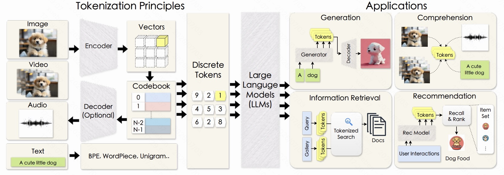
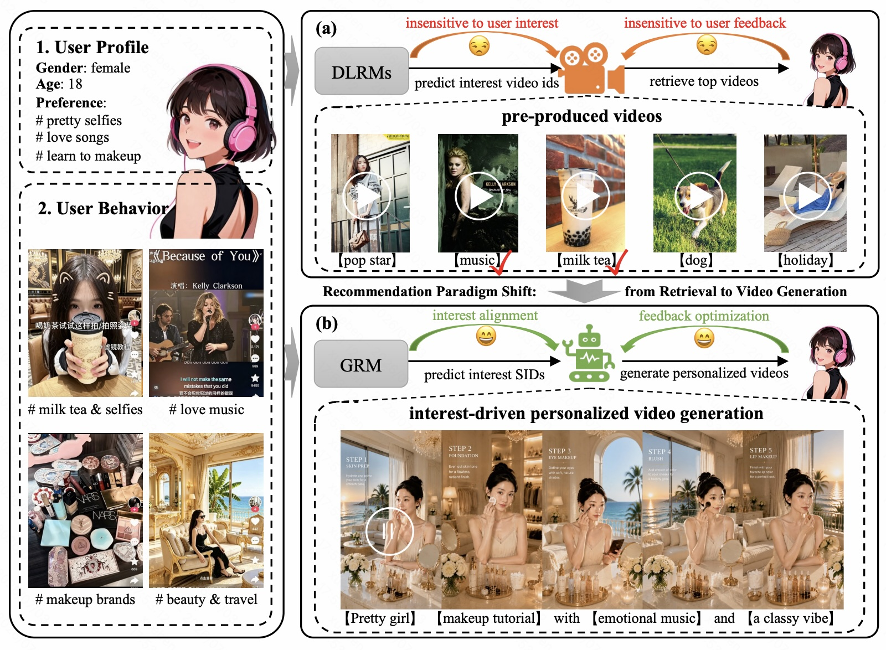
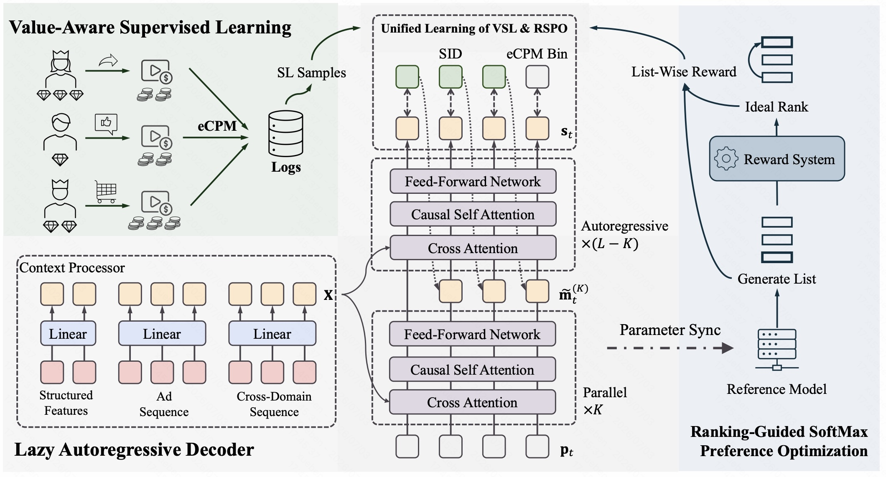
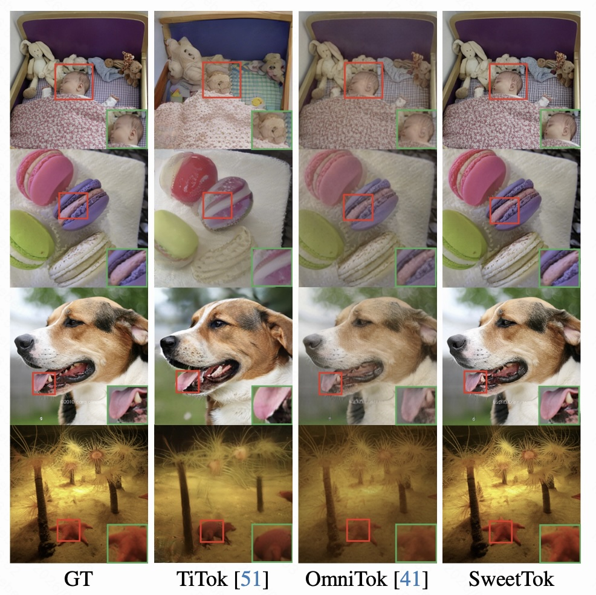
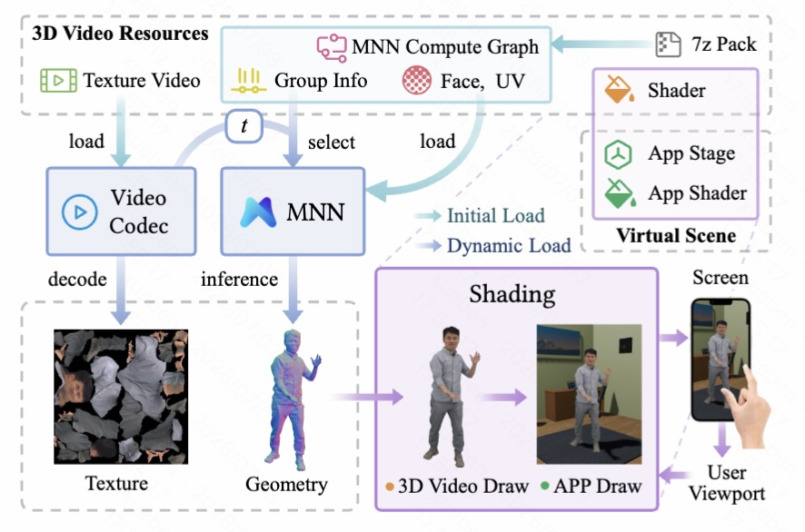
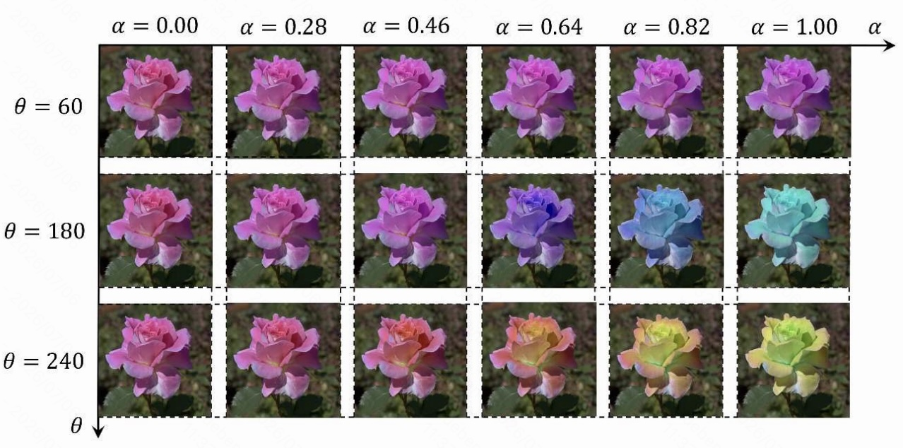
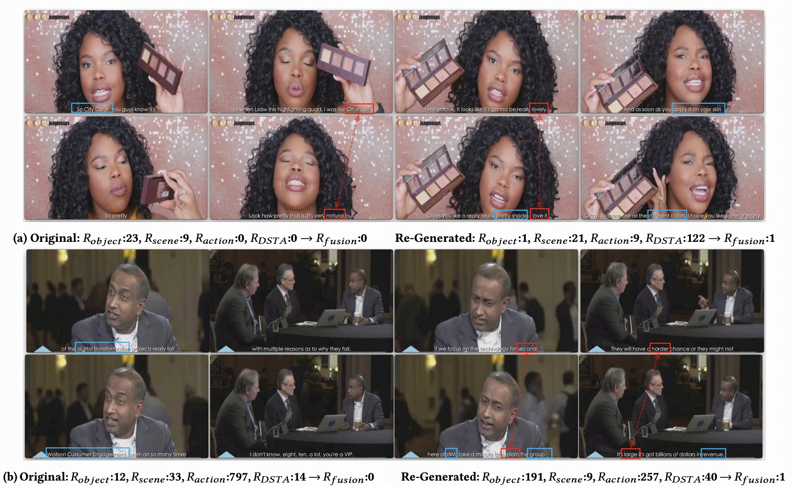

|
Ben Xue
I am a researcher working on Computer Vision and Recommendation.
I received my B.S. in EECS from Peking University in 2019, and my M.S. from the Academy for Advanced Interdisciplinary Studies (AAIS), PKU in 2022, advised by Prof. Yadong Mu.
My research interests include pixel-level vision, image/video generation, generative recommendation, and discrete tokenization.
I previously worked at Alibaba Taobao Tech. and am currently a researcher at the Kuaishou Advertising AIGC Algorithm Team, focusing on generative recommendation and AI-driven content production.
I have published papers at top venues including ECCV, ICCV, KDD, and MobiCom.
Email /
Scholar /
Github
|
|
|

|
Universal Discrete Tokenizers: Principles, Applications, and Future Directions
Ben Xue,
J. Wang, Y. Li, J. Lan, H. Xu, J. Jia, P. Jiang, Q. Chen, K. Gai, L. Liu, et al.
TechRxiv, 2026
paper (survey)
A comprehensive study of discrete tokenizers covering their design principles, downstream applications, and future research directions.
|
|

|
Recommendation as Generation: Unifying Personalized Video Generation and Recommendation at Industrial Scale
Y. Cheng*, B. Wang*, H. Zhang*, X. Gao*, Z. Yin, Ben Xue, Y. Li, J. Xue, Y. Ma, et al.
*Equal contribution
arXiv, 2026
paper
/
project page
Unifies personalized video generation and recommendation at industrial scale via a generation-centric formulation.
|
|

|
Generative Recommendation for Large-Scale Advertising
Ben Xue*,
D. Liu*, L. Wang*, M. Sun*, P. Wang*, P. Zhang*, S. Shi*, T. Xu*, Y. Sha*, Z. Liu*, et al.
*Equal contribution
KDD 2026 ADS Track, 2026 (Oral)
paper
A generative recommendation framework tailored for large-scale online advertising systems.
|
|

|
SweetTok: Semantic-Aware Spatial-Temporal Tokenizer for Compact Video Discretization
Z. Tan*, Ben Xue*, J. Jia, J. Wang, W. Ye, S. Shi, M. Sun, W. Wu, Q. Chen, P. Jiang
*Equal contribution
ICCV, 2025
paper
/
code
A semantic-aware spatial-temporal tokenizer that yields compact discrete representations for videos.
|
|

|
An End-to-End, Low-Cost, and High-Fidelity 3D Video Pipeline for Mobile Devices
T. Fang, C. Niu, Y. Sun, C. Lv, X. Jiang, Ben Xue, F. Wu, G. Chen
MobiCom, 2024
paper
A practical end-to-end 3D video pipeline optimized for mobile devices with low cost and high fidelity.
|
|

|
DCCF: Deep Comprehensible Color Filter Learning Framework for High-Resolution Image Harmonization
Ben Xue, S. Ran, Q. Chen, R. Jia, B. Zhao, X. Tang
ECCV, 2022 (Oral)
paper
/
code
A deep, interpretable color filter framework for high-resolution image harmonization.
|
|

|
Video2Subtitle: Matching Weakly-Synchronized Sequences via Dynamic Temporal Alignment
Ben Xue, C. Liu, Y. Mu
ICMR, 2022 (Oral)
paper
/
code
Matches weakly-synchronized video and subtitle sequences via dynamic temporal alignment.
|
|
🏀 Basketball ⚾ Baseball 🎸 Guitar 🍳 Cooking & Bakery
|
|
{kind=link}